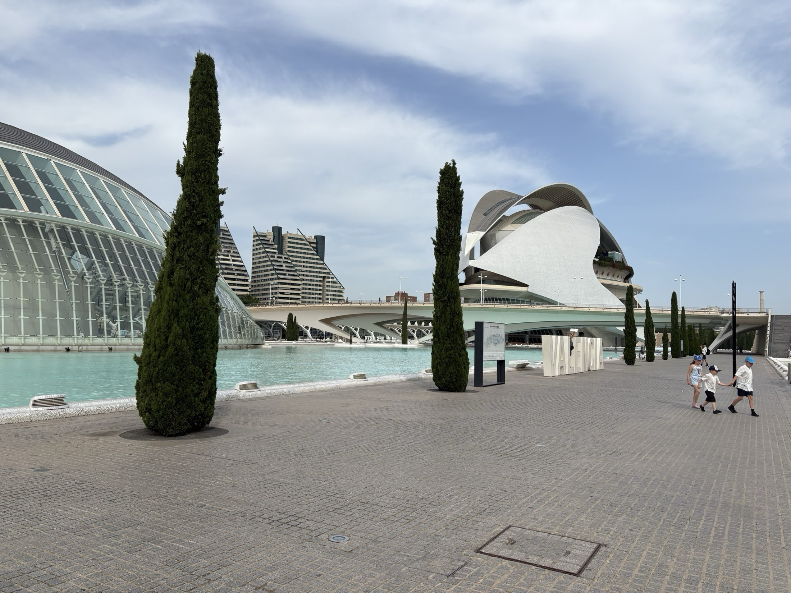
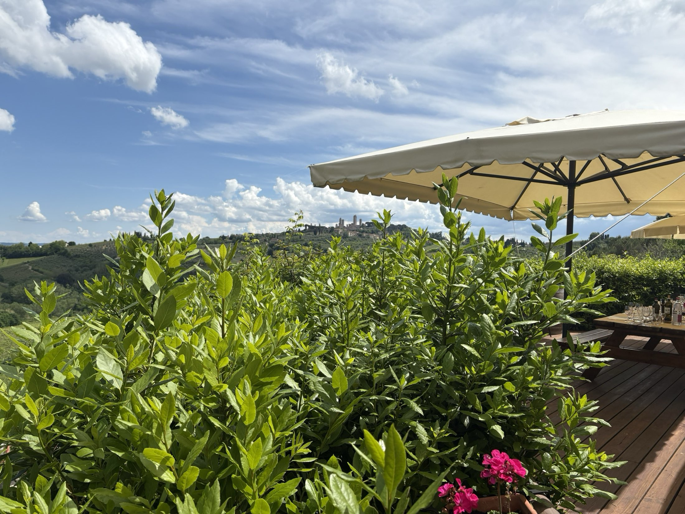

Selected work
Photography that lets a place breathe.
Travel, architecture, coastlines, and lived-in spaces—observed patiently and presented without getting between you and the image.

SeriesSpain SeriesItaly
SeriesItaly

ServicesSpaces & Real Estate